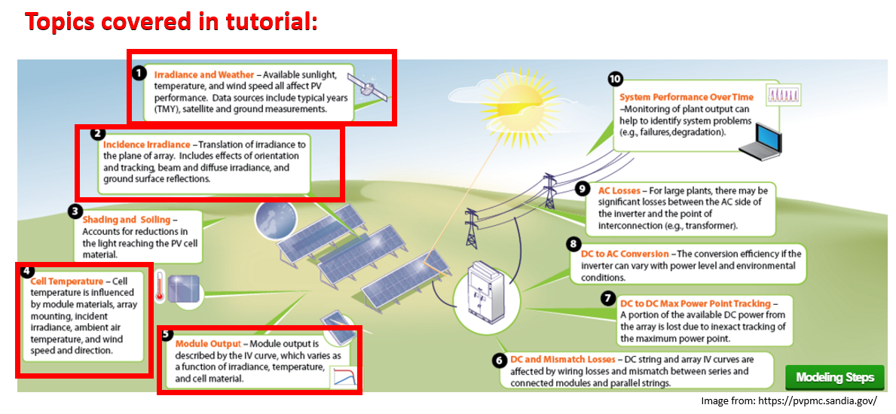

Welcome!¶
Welcome to the PV Software 101: from Sun position to AC Output! tutorial
Modeling tools for all aspects of photovoltaic systems are rapidly growing, and there are solutions for many of the things you might want to simulate. Python is becoming one of the scientific languages of choice, and many open-source tools are available for PV modeling. This tutorial will focus on teaching attendees PV modeling in python through the use of PVlib.
In this interactive tutorial we will go from getting acquainted with some common data used or measured in pv systems (i.e. weather), to modeling the AC energy output of a single-axis tracker system. This includes learning and simulating sun position, plane of array irradiances, temperature models, single-diode models and more.
We will review common vocabulary around python and data aggregation by hour, week, month, and visualization.
The tutorial will present hands-on examples in python, enabled via jupyter notebooks and a Jupyterhub (remote hosted server for jupyter notebooks and python language) so you, the attendee, don’t have to install anything, and can follow along while we go over the theory and code! In case it’s not obvious, a computer is required.
The tutorial will wrap up with an overview of other available open-source tools for other aspects of modeling PV systems.
More on your teachers:¶
The three of us have ample experience in data, coding, and PV field performance modeling, so we look forward to all of your questions.
|  |
|
Mark Mikofski
I am a principal solar engineer at DNV and product manager for SolarFarmer. I research, analyze, and predict PV system performance, degradation, and reliability. I have contributed to a few Python projects like pvlib python, PVMismatch, and SciPy | | |
Silvana Ayala Pelaez
I am a research scientist at NREL, focusing mostly on bifacial PV system’s performance, and circular economy. Python is my daily bread and butter for data analysis and building tools. Silvana has made substantial contributions to the NREL bifacialvf pvmismatch and bifacial radiance software packages. | |  |
|
Kevin Anderson
I am a research scientist at NREL doing cool stuff! I have contributed to work on slope aware backtracking, clipping loss errors in hourly yield estimates, and am a maintainer for pvlib python and a frequent contributor to RdTools. |
Learning Objectives¶
Access weather data (TMY3), understand irradiance data, and visualize it monthly.
Calculate sun position, plane of array irradiance, and aggregate irradiance data into average daily insolation by month and year.
Calculate module temperature from ambient data.
Use POA and module temperature to forecast a module’s performance.
Overview¶
The sketch below from the Sandia PV Performance Modeling Collaborative (PVPMC) outlines the topics we will cover in this tutorial:

Why learn this?¶
PV-lib is a library of algorithms and routines that you might encounter the need to use if you’re doing anything PV-modeling related. It is managed by members of the PV research community, who make sure the formulas and code are not only sleek but accurate.
You want to know the sun position? No need to code from zero the SPA (Solar Position algorithm), it’s in PVlib.
You want to reproduce the Sandia-King model to calculate module performance? It’s there, also.
You can find the most well-known models, as well as recently accepted values and approaches in published PV literature.
We hope adding this tool to your skillset will empower you to do better, faster research with an already solid foundation. Don’t reinvent the wheel!
How to use this tutorial?¶
This tutorial is a Jupyter notebook. Jupyter is a browser based interactive tool that combines text, images, equations, and code that can be shared with others. Please see the setup section in the README to learn more about how to get started.
Useful links¶
Tutorial Structure¶
This tutorial is made up of multiple Jupyter Notebooks. These notebooks mix code, text, visualization, and exercises.
If you haven’t used JupyterLab before, it’s similar to the Jupyter Notebook. If you haven’t used the Notebook, the quick intro is
There are two modes:
commandandeditFrom
commandmode, pressEnterto edit a cell (like this markdown cell)From
editmode, pressEscto change to command modePress
shift+enterto execute a cell and move to the next cell.The toolbar has commands for executing, converting, and creating cells.
The layout of the tutorial will be as follows:
Exercise: Print Hello, world!¶
Each notebook will have exercises for you to solve. You’ll be given a blank or partially completed cell, followed by a hidden cell with a solution. For example.
Print the text “Hello, world!”.
[5]:
# Your code here
print("Hello, world!")
Hello, world!
[6]:
a = 2
b = 3
a + b
[6]:
5
Going Deeper¶
We’ve designed the notebooks above to cover the basics of pvlib from beginning to end. To help you go deeper, we’ve also create a list of notebooks that demonstrate real-world applications of pvlib in a variety of use cases. These need not be explored in any particular sequence, instead they are meant to provide a sampling of what pvlib can be used for.
PVLIB and Weather/Climate Model Data¶
Sun path diagram: Start with
global_mean_surface_temp.ipynbthen feel free to explore the rest of the notebooks.
This work is licensed under a Creative Commons Attribution 4.0 International License.